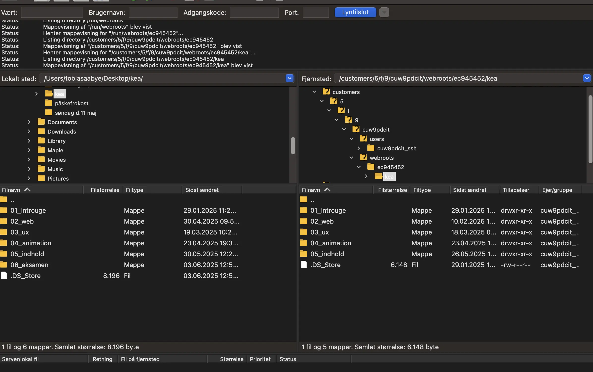
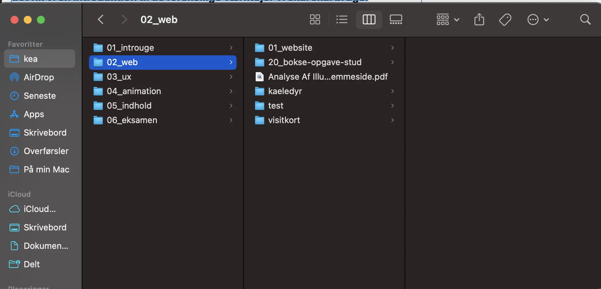

Tema 1
Beskrivelse af tema
I tema 1 blev introduceret til multimediedesigners arbejdsopgaver, igennem en masse forskellige oplæg fra tidligere studerende. De fortalte b.la. her hvad DE har brugt uddanelse til og hvad der er af muligheder efter uddannelsen. Udover det fik vi en introduktion til de forskellige værktøjer vi skal skal bruge.
Beskrivelse af opgave
Til sidst skulle vi lave en kort video i grupper af 4, hvor vi skulle ved hjælp af et tema, fortælle lidt om hvem vi var som personer.
Klik her for at se mit projektI tema 1 fik vi også købt vores eget domæne, som skulle bruges til at gøre vores side søgebar. Det gjorde vi også ved hjælp af filezila, som forgår lidt som et slags server hotel, hvor vi oploader vores tema opgaver som vi har lavet.
Det var her også vigtigt at have en god mappestruktur, som gør at vi nemt kan finde de opgaver som vi skal bruge.som gør at vi nemt kan finde de opgaver som vi skal bruge.som gør at vi nemt kan finde de opgaver som vi skal bruge.
